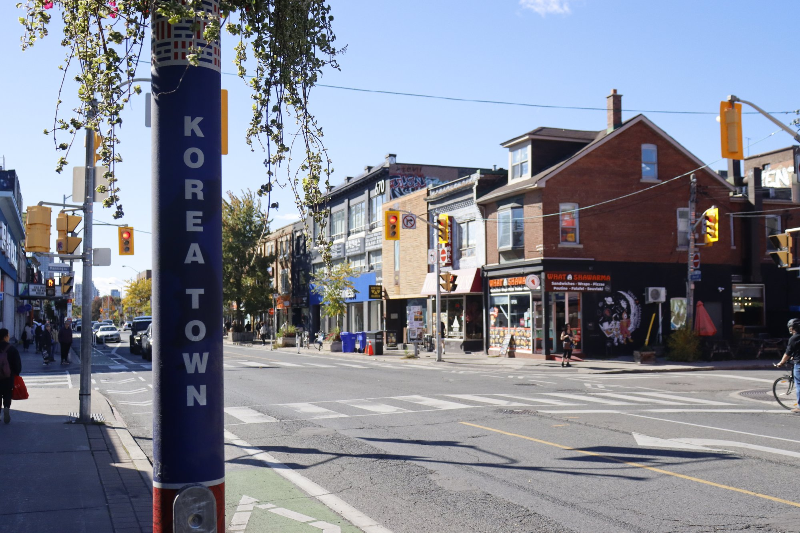

Portrait
A portrait project focused on the person in front of the camera.
View portraitDoris Shao
Photography Portfolio
A selection of my portrait and documentary photography.
View documentaryTwo photography projects exploring people and places.
A portrait project focused on the person in front of the camera.
View portrait
A photography series recording the scenery and everyday surroundings of Koreatown.
View documentary